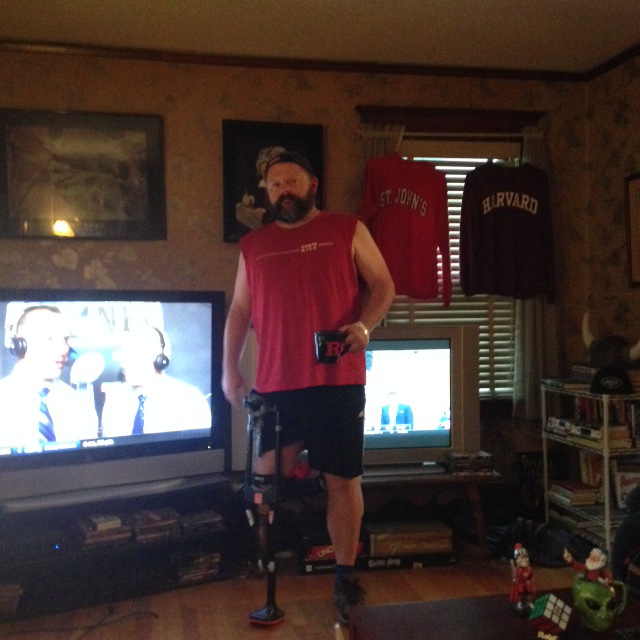
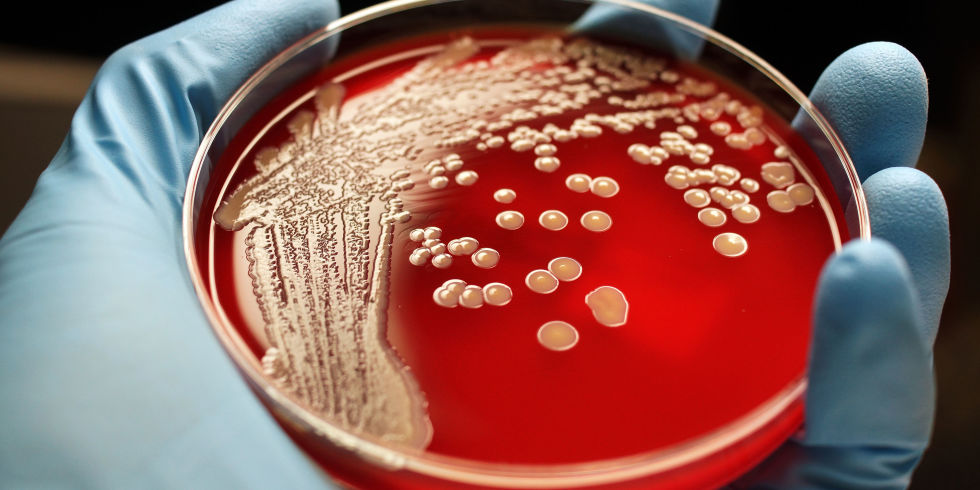
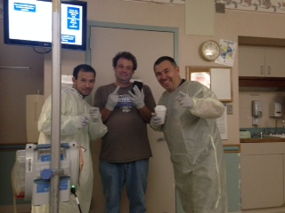
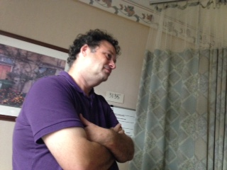
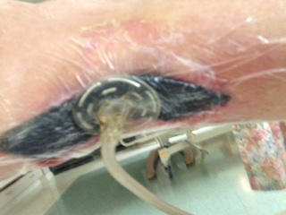
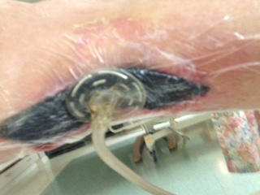
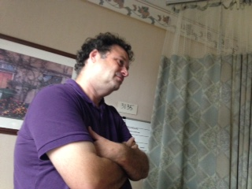
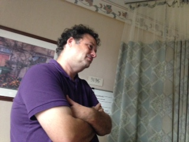

Prologue: Tore Achilles Tendon July 10th playing B-ball at CYO w
Kenny and Daryl. The good Lord saw a hethen playing churchball
and he smote me! Surgery 7/14 to repair. Sept 25th, ten weeks
post-op, re-injure AT. It is completely retorn. Schedule a
new surgery after discussions of there being less tissue, etc.
New surgery 9/30. Two weeks post op and it's time to visit ortho
and have bandages removed. We pick up the action here,
10/17/2016...
Will come back and flesh this section out with pictures of the first go round later...

----
Monday, October 17th: My first visit post "second" surgery. Due to a
scheduling snafu my ortho, Nilesh Patel, is not on duty, but I get
Dr. Ramadi to look at me. In Dr's office the staff removes my
bandages. The wound is a black bloody mess. The stitches have
popped out. It is clearly infected. You can see the Achilles
tendon through the hole in the leg. They re-wrap it, put me on
Keflex (antibiotic) and tell me to return to see Nilesh (Dr. Patel) the next
morning at 8am.
Tuesday, October 18th: I rise and go directly to see Dr. Patel. He
knows what's coming but is shocked by the damage. He scheduled me
for emergency debridement/clean up surgery that night and tells me I
will likely spend the night at JFK. I go at 3pm to check in, get
processed and am under the knife by 6pm. I wake in recovery at
8pm. Pain is not so bad. They take me to room 3135 in the ortho
wing at Kennedy. I did not know it at the time, but it will become
my home for five days.
Kenny got my laptop to me fast so I would not go into DTs
The debridement went well. There was not enough tissue to close
the wound on the back of my leg so the doctors are using a "wound
VAC" where a sponge is placed in the gap and negative atmospheric
pressure is applied to bring the wound together and to keep the
nearby skin dry and not wet with seepage. I have a hole in the back
of my leg with a black sponge hooked up to a shop vac in it.
Tired. Need some sleep. Black sponge is a great band name.
Wednesday, October 19th: Though I was going home today. Run
through a bazillion blood tests. Met with plastic surgeons. They
will perform surgery next week to close the wound. Want a consult
on Monday, 10/24 and to operate on 10/26. Good, less time with the
Kirby vacuum in my leg. Talk with some nurse at home people about
doing my own IVs and running the wound vac for a few days. Eating
well. Told at 4pm that they cannot find a portable wound vac by end
of day so I need to stay in the hospital. Not thrilled, but no big
deal. One day closer to surgery to close wound and I have
professionals keeping the hole in the back of my leg clean.
Thursday, October 20th: TODAY I'm going home. Leg wound re
bandaged. Man, what a mess. Lots of meds and antibiotics. I keep
asking on check out procedure. No one will give me a clear answer.
Am told at 4pm that the infectious disease doctor will not clear me
to go home. Huh? I talk to my Ortho and he says not to worry on
it, that they will just do antibiotics and we can still do surgery
on next Wed. Good, all I care about. But why can't I go home?
Been here two days, the wound vac portable is here. Have
instructions on nursing service for antibiotics. Nurses installed a
PICC line in my arm today to make IVs easy. I'm ready to go.
Doctor says the culture is not back from the surgery on Tuesday so
she cannot release me. In retrospect, I think they double checked
before telling me what was going on. Read on...
Having only one leg to stand on I am a Fall Risk, another great band name...
Friday, October 21th: The day of the Curveball. I wake at 7am and
notice that the nurses are whispering and hanging some weird supply
bag on my door. Now when they come in they have gowns and gloves
on. A nurse comes in and wants to take blood. She tells me that I
was positive for a bacteria in my culture. The infectious disease
doctor will be in to talk to me later to discuss antibiotic
treatment. OK, I guess it's no big deal. I am not quarantined, I
am "contact precaution."

Finally I get why the nurses were acting the way they were. I
have MRSA. The wound infection was a MRSA infection, the super bug
that is resilient to 50 different types of antibiotics. People are
running around like it's the andromeda strain. I talk to the doc
and it turns out we have to try a bunch of Vancomysin antibiotic (it
still knocks out MRSA) and some other types, so they start testing.
Antibiotic, bloodwork, antibiotic, bloodwork, my left arm is blown
out with needles. I will not be cleared to go home by docs w this
in my system.
Now a narrative that makes sense is forming though. I have had
MRSA in my system the whole time. It slowed the healing of the
first AT repair and made it weak and it infected the second one at the
incision point. NOW my experiences are making sense (as much
sense as they can with a PICC in your arm and a sponge in your leg).
Friends all came Fri night, dressed in gowns and made
asses of themselves so it was fun. I will be here Saturday.
 
Saturday,
October 22nd: Was told early that I would not be cleared until
Sunday earliest. Sunday looks good for release now, but I've
heard that before. Then again, Cubs are in the series so anythong is
possible... Maureen came to visit. Peter in afternoon.
Howie, always a good time at JFK.


 


 
